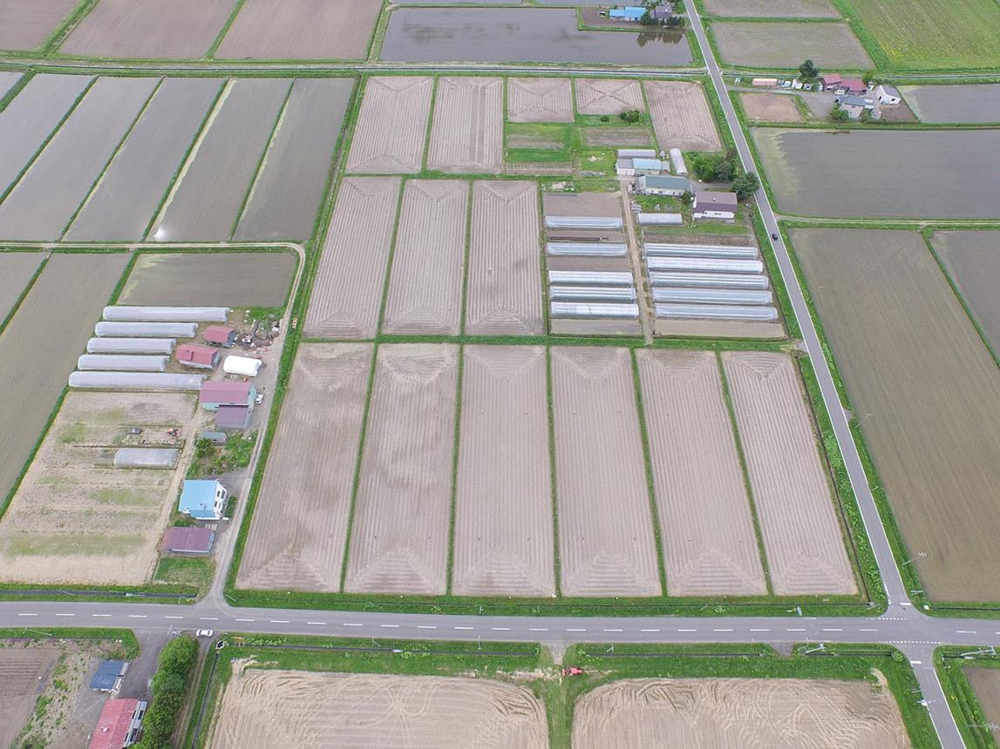
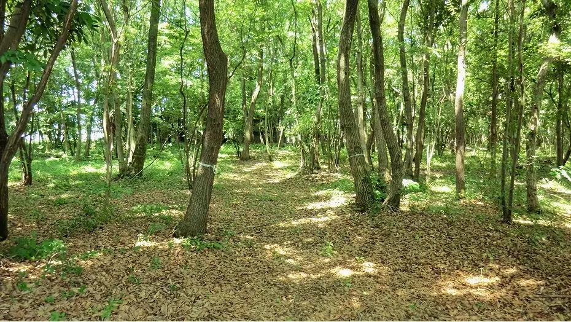
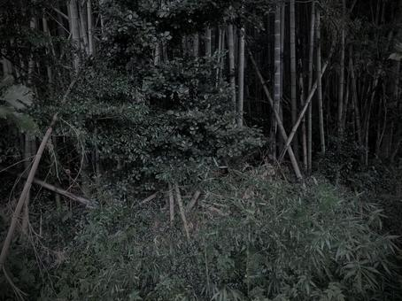

AIエージェントを使った開発は、里山の手入れに似ている。田畑のように人間が隅々まで作り込むのでもなく、放置して暗い森に戻すのでもない。里山とは、人が手を入れ続けることで保たれる、明るく見通しの良い雑木林のことである。
作り込む ←──── 手入れする ────→ 放置する

人間が隅々まで作り込む。手間がすべて人間に返ってきて、AIに任せる意味が薄くなる。

間伐して、草を刈る。ただし全部は切らない。明るく見通しの良い林が、少ない手間で保たれる。

手を入れない。竹と薮が茂って光が届かなくなり、気づいたときには、もう中へ入れない。
森を放置しない、かといって切りすぎない。間伐して、草を刈って、明るく見通しの良い雑木林を保つ——AIとは、そう接する。